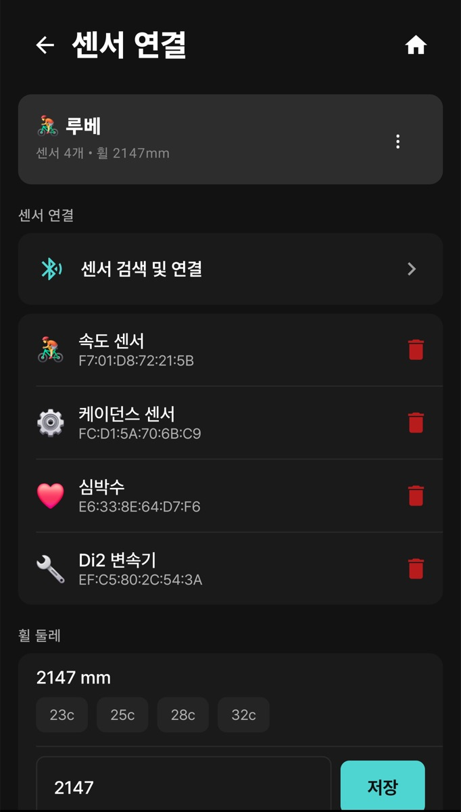
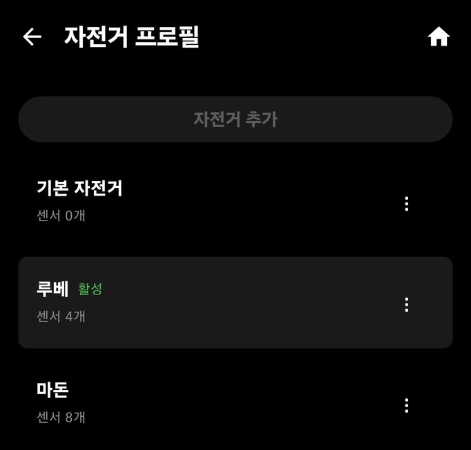

3. 센서 연결
이 장에서 할 수 있는 것
- 심박계, 속도·케이던스 센서, 파워미터 같은 블루투스 센서를 연결합니다.
- 휠 둘레를 맞춰 속도·거리 오차를 줄입니다.
- 자전거가 여러 대면 자전거 프로필로 센서 묶음을 바꿔 씁니다.
연결할 수 있는 센서
모두 BLE(저전력 블루투스) 기기입니다. 센서가 없어도 GPS로 거리·속도·페이스를 기록합니다.
| 센서 | 보여 주는 값 | 종목 |
|---|
| 심박계 | 심박수, 심박 존 | 자전거 · 러닝 |
| 속도 센서 / 케이던스 센서 | 바퀴 기반 속도·거리, 페달 회전수(rpm) | 자전거 |
| 파워미터 | 파워, 페달 밸런스, 크랭크 케이던스 | 자전거 |
| 전자 변속기 (Shimano Di2, SRAM AXS) | 기어 위치·배터리 (AXS는 표시 항목이 적습니다) | 자전거 |
| 후방 레이더 | 뒤에서 다가오는 차량 | 자전거 |
| 액션캠 | 녹화 상태, 배터리, 녹화·사진 버튼 (9장) | 자전거 |
러닝 걸음 케이던스(spm)는 센서 없이 휴대폰의 걸음 감지로 잽니다. Android는 신체 활동 권한이 필요합니다.
따라 하기: 센서 연결
- 센서를 깨웁니다. 심박계는 몸에 착용하고, 속도·케이던스 센서는 바퀴나 크랭크를 돌립니다.
- 더보기 > 센서를 엽니다. 화면 제목은 센서 연결입니다.
- 맨 위 자전거 카드(예: “루베 · 센서 4개 • 휠 2147mm”)가 센서를 붙일 자전거인지 확인합니다.
- 센서 검색 및 연결을 누르면 주변 센서를 찾습니다. 목록에서 내 센서를 눌러 등록합니다.
- 등록한 센서는 아래 목록에 이름과 기기 주소로 나타납니다. 다음부터는 기록을 시작할 때 자동으로 다시 붙습니다.

센서 연결 — 등록된 센서마다 오른쪽 휴지통이 센서 삭제입니다. 실수로 누르지 않게 주의하세요.
센서 목록과 휠 둘레는 설정 > 내 자전거에서도 같은 화면으로 열립니다.
휠 둘레
속도 센서는 바퀴가 한 바퀴 돌 때의 거리(휠 둘레)로 속도를 계산합니다. 더보기 > 센서 아래 휠 둘레에서 타이어 폭 버튼(23c · 25c · 28c · 32c)을 고르거나 mm 값을 직접 넣고 저장을 누르세요.
정확히 맞추려면 타이어에 표시를 하고 평지에서 한 바퀴 굴린 거리를 재어 mm로 입력합니다.
자전거 프로필
더보기 > 자전거 프로필에서 자전거별로 센서·휠 둘레·가상 파워 설정을 따로 저장합니다. 지금 쓰는 자전거에는 활성 표시가 붙고, 각 자전거의 연결 센서 수가 함께 보입니다.

자전거 프로필 — 위쪽 자전거 추가로 새 자전거를 만들고, 각 줄의 ⋮ 메뉴에서 관리합니다.
데이터 필드 배치도 자전거마다 따로 저장됩니다(
4장). 로드와 MTB처럼 장비가 다르면 자전거 프로필을 나눠 두세요.
자주 막히는 점
센서가 검색되지 않으면 ① 센서를 다시 깨우고 ② 휴대폰 블루투스가 켜져 있는지 보고 ③ 다른 앱(예: 다른 사이클링 앱)이 같은 센서를 잡고 있지 않은지 확인하세요. 많은 BLE 센서는 한 번에 한 앱에만 연결됩니다.
러닝 종목에서는 자전거용 센서(속도·케이던스·파워·변속기·레이더)가 붙지 않는 것이 정상입니다. 러닝에서는 심박계만 연결하세요.
연결이 자주 끊기면 센서 배터리를 먼저 바꿔 보세요. 금속 휴대폰 케이스나 주변의 많은 블루투스 기기도 끊김의 원인이 됩니다.